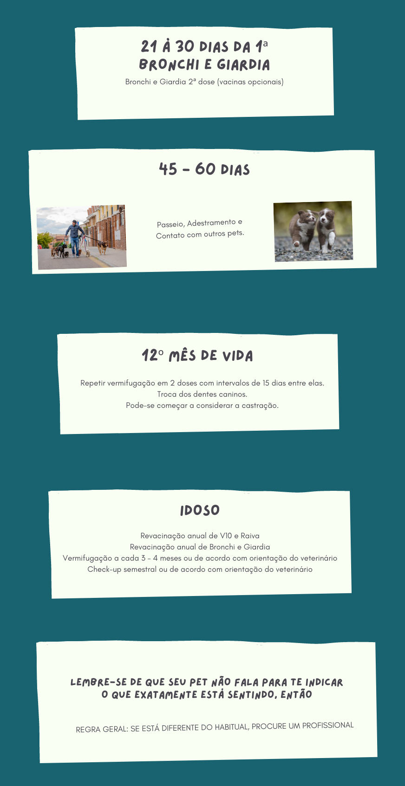
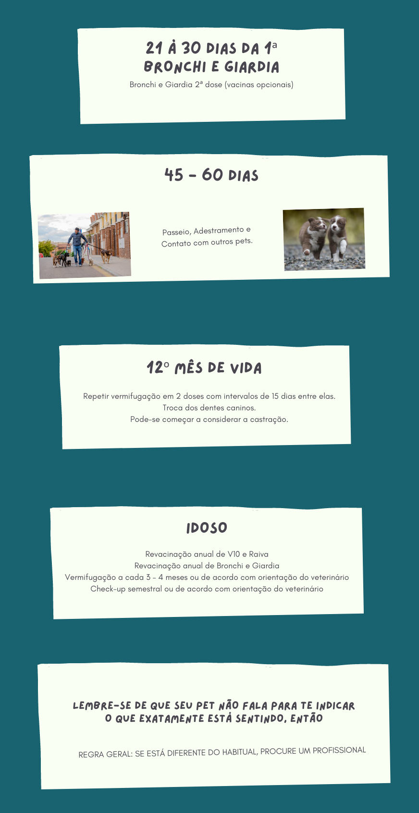

Quando é o caso de levar
o pet ao veterinário?

Vacinas

Check-Up
Acidentes

Mudança de Hábitos
Apatia
Vômito
Uivos em Excesso

Falta ou Excesso
de Fome ou Sede
Mau Hálito
Tosse

Lesões de Pele

Diarreia
-
Para castrar, é preciso dar a primeira cria?
Não. Quanto mais cedo castrar, melhor, para evitarmos estímulo hormonal e consequentemente tumor de mama, falsa gravidez, corrimento vaginal, piometra, crias indesejáveis (fêmeas). Nos machos, prostatite, etc.
-
O animal não sente falta de sexo?
Não. O mesmo age por extinto e não haverá trauma psicológico, ele não entende que lhe foi suprimido o estimulo hormonal (não sabe que foi castrado).
-
Anestesia tem risco?
Sim, mas hoje com o advento da anestesia inalatória e novas técnicas anestésicas, a probabilidade de complicações é mínima. É considerado um procedimento seguro.
-
Quanto tempo vive um cão ou gato?
A média de vida é de 12 a 13 anos, porém os cães de grandes portes, vivem menos que os de pequenos portes. A expectativa de vida aumenta nas pessoas e nos animais a proporção que evolui a Medicina.
-
Qual espectativa de vida de um cão?
-Raças pequenas (10kg): 9-13 anos;
-Raças médias (10-25kg): 9-11 anos;
-Raças grandes (25-45kg): 7.5-10.5 anos;
-Raças gigantes (45kg): 6-9 anos. -
Ração faz mal?
Se for de boa qualidade não, pois as mesmas contém todos os nutrientes necessários para um animal saudável.
-
Quais os sinais de envelhecimento?
-Necessidade calórica cai 30%;
-Diminui atividade imunológica;
-Obesidade;
-Perda de massa muscular, óssea e cartilaginosa;
-Artrite, problema dentário;
-Incontinência urinária nos machos aumenta, testículos diminui;
-Nas fêmeas fibrose mamária;
-Pulmão absorve menos oxigênio (fibrose);
-Disfunção cognitiva (demência) não tem uma causa médica;
-Sistema nervoso (olfato, paladar, visão, e audição) alterados;
-Não reconhece pessoas e lugares;
-Urina em lugares inadequados;
-Problemas com sono;
-Desatenção;
-Desaprendizado;
-Ansiedade norurna;
-Falta de memória, aprendizado, percepção;
-Não tem idéia do que acontece ao redor.
 
